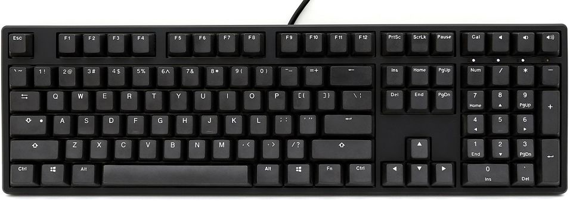

Non mechanical keyboards have rubber domes underneath with small conductive layers attached on either side of it, when you
press down on the key, it forces the 2 conductive layers together to signal your computer that the key is being pressed.
This requires the key to be pressed all the way down and leads to a mushy feeling keyboard.
Mechanical keyboards use a physical switch with multiple parts underneath the cap. When pressing down the keys, you eventually hit
the actuation point (typically around 2mm) that sends the signal to your computer that the key has been pressed. These switches are faster,
more tactile, and last longer than membrane keyboards.
There are also many types of shapes and sizes that mechanical keyboards come in. Some of the most common are full standard layout,
60%, and split. you can learn more about each layout and see pictures Here
More about keyswitches
Mechanical keyboards offer lots of different types of keyswitches that can go underneath the caps on your board. Each of these switches operate
differently and have a unique feel to them. The main brand of switches are all made by a German company called Cherry.
Cherry MX Blues
Cherry MX Blue switches are the type of switch that people typically associate with mechanical keyboards. They have a very distict
and clicky tactile bump when they reach the actuation point that give them their signiture click. These switches are great for typing but some people
do not like them due to the noise they produce. Blues require 50g of force to reach the actuation point.
Cherry MX Browns
Cherry MX Browns Also have the tactile bump in the middle of the keypress just like blues, but without any of the noise. They are built to spring
back into place extra quickly after being pressed. Browns are a great middle ground for all around gaming and typing useage. They require only 45 g of actuation force.
Cherry MX Reds
Cherry MX Reds are a type of linear switch, meaning that there is no tactile response when you have hit the actuation point. The actuation point is
still in the middle of the keypress, but you will not feel anything until the key is bottomed out. Reds are very quiet and they are often a go to for gamers
who are using mechanical keyboards. These switches have an actuation force of 45 g.
Cherry MX Blacks
Blacks are extremely similar to Reds. They are a linear switch that operate very quietly. The difference between them is that blacks require 60 g of force making them
the hardest of the bunch to hit, and also have the heaviest feel to them with a 60g actuation force.
More about keycaps
Another great thing about mechanical keyboards is that the keycaps are easily removeable and replaceable! Rarely is there a need to replace your keycaps,
but there are plenty of fun Keycaps you can have to make your keyboard look great! Below are some examples of different keycaps. Many many more options exist, so take through some more
by doing your own search!

Nothing special about these. Just your typcial black keycaps.
So what are your preferences?
As you have gone through this wepage you have entered in what you would prefer. According to what you entered you would like a